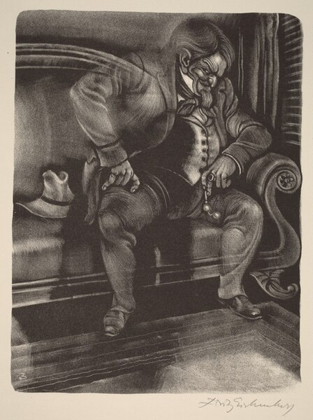

Warning: This blog has spoilers for The Brothers Karamazov, a Book by Fyodor Dostoevsky

Artwork by Fritz Eichenberg (artist) American, 1901 - 1990
Background
Ivan
There are three brothers -- Dimitri, Ivan, and Alyosha Karamazov, listed in descending order of age. Ivan and Alyosha are full siblings, while Dimitri is their half-brother, sharing the same father.
Dimitri, like his father, is blunt, vice-ridden, and loud. Ivan is an intellectual; he represents the rational, skeptical mind, often grappling with questions about God, morality, and the meaning of human suffering. Alyosha is spiritual, pure in his belief, deeply religious, a devout Christian and a monk. He is referred to as a holy fool throughout the book by several characters. All three brothers are sensualists.
Ivan is deeply disturbed by the suffering of children in the world. He rejects the acceptance of God as described by the world, in a world where children suffer so cruelly.
Prior to this chapter, Ivan notoriously said, "If God does not exist, everything is permitted." This represents his existential struggle with morality in a godless world. For all his intellect, he can't bring himself to either accept God or explain morality in a godless world.
The Situation
Ivan has just entered his cabin, sick and struck with brain fever. He walked all the way through the snow to his room after talking to Smerdyakov. It was in front of him that he said, "If God does not exist, everything is permitted." Smerdyakov had just confessed to Ivan that he was the one who murdered their father, claiming he did it because "everything is permitted." This revelation strikes Ivan deeply, amplifying his existential dread. The confession, laced with blame, leaves Ivan tormented and guilt-ridden. Now, he is trapped in a state of delirium, overwhelmed by his thoughts and emotions.
The Devil
The Scope of the Devil
This book is not a fantasy novel; it's realistic, grounded in reality. So the devil itself is not a real physical being. He's merely Ivan's hallucination; it's in his head. The devil is not real to the author, Dostoevsky, or us, the readers. It's only real to Ivan himself. We can think of the devil as either a schizophrenic hallucination or Ivan's dream. Either way, it is a manifestation of Ivan's guilt, Ivan's doubts, and in Ivan's own words, a manifestation of "only my worst thoughts, and what’s more, the stupid ones."
Physical Appearance of the Devil
The most striking aspect of the devil's appearance is its surprising lack of menace. It resembles not a devil but rather a weary, ordinary gentleman. It's as if the devil's appearance escapes Ivan's understanding, revealing his inability to truly recognize the face of evil.
This was a person or, more accurately speaking, a Russian gentleman of a particular kind, no longer young. He was wearing a brownish reefer jacket, rather shabby, evidently made by a good tailor though, and of a fashion at least three years old, that had been discarded by smart and well-to-do people for the last two years. His linen and his long scarf-like necktie were all such as are worn by people who aim at being stylish, but on closer inspection his linen was not over-clean and his wide scarf was very threadbare.
The Devil Ivan sees seems like an older, impoverished version of a gentleman who once lived a more "fashionable" life, paralleling Ivan's intellectual fall from confidence to despair.
Throughout the conversation, the Devil quotes French. French symbolizes sophistication in Russian society. It relates to nobility and intellectualism, like Latin for English speakers. But Dostoevsky uses it to signify the out-of-touch intellectualism of the elite, their privilege, and moral degradation.
Sometimes they have children, but if so, the children are always being brought up at a distance, at some aunt’s, to whom these gentlemen never allude in good society, seeming ashamed of the relationship. They gradually lose sight of their children altogether, though at intervals they receive a birthday or Christmas letter from them and sometimes even answer it.
People who look like the devil get so consumed by their intellectualism that they disconnect from society and even from their loved ones, including their own children. Ivan is an intellectual but isolated from family and lonely; the Devil's appearance parallels this.
Motive
The devil's presence serves a deeper purpose beyond mere mischief or evil. I believe it has three major motives:
- Convince Ivan of his reality -- The Devil is aware of Ivan's skeptical nature. Therefore, first and foremost, the devil must earn Ivan's confidence, his trust, his respect, and even his sympathy. The Devil does this very slyly, through cunning dialogue and subtle manipulation.
- Mock Ivan -- First agree with his ideas about God not being real. Then, he turns these beliefs on their head, mocking the emptiness of a purely rational mindset devoid of spiritual belief or moral clarity. It's a critique of Ivan's rigid rationalism, exposing its limitations and the existential void it creates.
- Guilt trip Ivan -- After dismantling Ivan's ideas and highlighting their flaws, the devil wants to make him feel guilty for sharing and even fathoming these ideas. The devil wants to make Ivan feel responsible for the death of his father as a result of his ideologies. This is the ultimate goal; more than anything else, the devil is a personification of Ivan's guilt.
The Conversation
Devil: “I say,” he began to Ivan, “excuse me, I only mention it to remind you. You went to Smerdyakov’s to find out about Katerina Ivanovna, but you came away without finding out anything about her, you probably forgot—”
Ivan: I don't believe in you.
*The Devil slips into the conversation by casually mentioning an event that just happened to sound all natural and real.*
Devil: Don't, "what’s the good of believing against your will?".... "By the way, I am listening to you and am rather surprised to find you are actually beginning to take me for something real, not simply your fancy, as you persisted in declaring last time."
Ivan: “Never for one minute have I taken you for reality.”
*Ivan vehemently denies accepting the Devil as reality.*
Devil: “Excuse me, excuse me, I’ll catch you. When you flew out at Alyosha under the lamppost this evening and shouted to him, ‘You learnt it from him! How do you know that he visits me?’ you were thinking of me then. So for one brief moment you did believe that I really exist,”
Ivan: “Yes, that was a moment of weakness ."
Devil: And why were you so surly with Alyosha just now? He is a dear;
Ivan: “Don’t talk of Alyosha! How dare you, you flunkey!” .... “Hold your tongue, I’ll kick you!”
Devil: "“I shan’t be altogether sorry, for then my object will be attained. If you kick me, you must believe in my reality, for people don’t kick ghosts."
Ivan: “Scolding you, I scold myself,” Ivan laughed again, “you are myself, myself, only with a different face. You just say what I am thinking … and are incapable of saying anything new!”
Devil: “If I am like you in my way of thinking, it’s all to my credit,”
Ivan: "You choose out only my worst thoughts, and what’s more, the stupid ones. You are stupid and vulgar. You are awfully stupid. No, I can’t put up with you!"
Devil: “My dear friend, above all things I want to behave like a gentleman and to be recognized as such.”
To challenge Ivan, the Devil points out how Ivan mentioned his existence to Alyosha, proving he must think the Devil is real. Ivan, in turn, gets angry, not just because the Devil mentions "his dear Alyosha," but also because of his own slip-up.
After more back and forth, the Devil says: "You are scolding me and now rheumatism has come in again—"
Ivan: "Fool."
Devil: “You keep saying the same thing; but I had such an attack of rheumatism last year that I remember it to this day.”
Ivan: "The devil have rheumatism!"
Devil: "Why not, if I sometimes put on fleshly form? I put on fleshly form and I take the consequences." In Latin, he says, "I am Satan, and I think nothing human is alien to me."
Ivan: "That’s not bad for the devil!"
Devil: “I am glad I’ve pleased you at last.”
Ivan has finally yielded to praising something about the Devil. He’s now drawn deeper into the conversation, entangled in the Devil’s clever wordplay and mind games.
Sympathies for the Devil
Following are notable dialogues by the Devil:
"I, for instance, simply ask for annihilation. No, live, I am told, for there’d be nothing without you. If everything in the universe were sensible, nothing would happen. There would be no events without you, and there must be events. So against the grain I serve to produce events and do what’s irrational because I am commanded to. For all their indisputable intelligence, men take this farce as something serious, and that is their tragedy."
"They suffer, of course … but then they live, they live a real life, for suffering is life. Without suffering what would be the pleasure of it?"
"But what about me? I suffer, but still, I don’t live."
"You are laughing—no, you are not laughing, you are angry again. You are forever angry, all you care about is intelligence, but I repeat again that I would give away all this super-stellar life, all the ranks and honors, simply to be transformed into the soul of a merchant’s wife weighing eighteen stone and set candles at God’s shrine."
The Devil is mocking the absurdity of his own existence and how he envies the simplicity of an ordinary, mundane life, reflecting on the complex nature of suffering and desire. This dream of being something as ordinary as a merchant's fat wife is an expression of the devil's ironic self-pity.
To all this, Ivan says: "Then even you don’t believe in God?" This is where the second part of the conversation that would yield to torturing Ivan with guilt starts.
The Devil’s Stories
A Quadrillion Kilometers to Paraside
There was, they say, here on earth a thinker and philosopher. He rejected everything, ‘laws, conscience, faith,’ and, above all, the future life. He died; he expected to go straight to darkness and death, and he found a future life before him.
‘This is against my principles!’ he said. And he was punished for that… he was sentenced to walk a quadrillion kilometers in the dark and when he has finished that quadrillion, the gates of heaven would be opened to him and he’ll be forgiven.
At first, he refuses to walk, lying down in protest for thousands of years.
But eventually, he gets up and begins walking. After an unimaginably long journey, the philosopher finally arrives at the gates of Paradise. The moment he enters, he exclaims that even two seconds in Paradise were worth walking not just the quadrillion kilometers but a quadrillion raised to the quadrillionth power.
Despite his earlier stubborn disbelief, he becomes overjoyed and fanatical.
At the end of the story, the Devil says: "I repeat, it’s a legend. I give it for what it’s worth. So that’s the sort of ideas we have on such subjects even now."
The philosopher symbolizes a rationalist who rejects faith, the afterlife, and the belief in God, relying solely on logic and reason. He expects nothingness after death but is frustrated when faced with an afterlife. For this, for simply being a rationalist and not believing, he is condemned to an arduously long walk. And he does it, when left with nothing else to do, when finally left with no other choice, when finally defeated in his pride, he walks an eternal walk and reaches salvation. That’s how long it takes for him to realize his folly and accept God.
This story is an attack on Ivan's own rationality, highlighting the foolishness of his monumental pride, intellectual arrogance, and his unreasonable stubbornness in reason.
Norman Sinner Girl
A little blonde Norman girl of twenty—an unsophisticated beauty that would make your mouth water—comes to an old priest. She bends down and whispers her sin. ‘Why, my daughter, have you fallen again already?’ cries the priest. ‘What do I hear! Not the same man this time? How long is this going on? Aren’t you ashamed!’ To which she says, ‘It gives him so much pleasure, and causes me so little pain!’
Instead of portraying this as a sin of lust, the Devil goes on to say, "It was the very cry of nature, which, if you will, is even better than innocence." So he is appreciating the girl, unlike the father, who thinks she has sinned.
I heard the priest made an appointment with her for the evening—though he was an old man hard as flint, he fell in an instant!
It's proof that natural desires, even in someone who should be strong and morally disciplined, can take over. Nature is more powerful than faith. Nature is true faith.
The inclusion of this story can have two purposes: First, to serve as an agreement to Ivan's disbelief in faith, to make Ivan open up and vulnerable to a later revelation of fallacies in his intellectual stance. Second, to present nature itself as a form of faith, which Ivan rejects, thereby rejecting the very nature of humanity, which he fails to account for with all his reason and rationality.
After this story, Ivan gets even more agitated and says, “Leave me alone.”
Devil Points Out Why Ivan is Angry with Him
You are really angry with me for not having appeared to you in a red glow, with thunder and lightning, with scorched wings, but have shown myself in such a modest form. You are wounded, in the first place, in your aesthetic feelings, and, secondly, in your pride. How could such a vulgar devil visit such a great man as you!
This is symbolism for Ivan's inability to truly grasp the nature of evil. Despite all his theories on good and evil, he imagines evil in a certain, rigid way and is incapable of comprehending it when it deviates from his preconceived notion.
Secondly, Ivan is angry because of the very appearance of the Devil, for it signifies doubts in his intellect. It hurts his pride.
The Final Blow
Instead of destroying each other, we should be destroying the belief in God, belief in the afterlife, and live life in the present. We should create a new world, a utopia, abandon God. "Men will unite to take from life all it can give, but only for joy and happiness in the present world. Man will be lifted up with a spirit of divine Titanic pride and the man-god will appear."
Devil starts with an agreement to Ivan's godless world:
The question now is, is it possible that such a period will ever come? If it does, everything is determined, and humanity is settled forever. But as, owing to man’s inveterate stupidity, this cannot come about for at least a thousand years, everyone who recognizes the truth even now may legitimately order his life as he pleases, on the new principles. In that sense, ‘all things are lawful’ for him. What’s more, even if this period never comes to pass, since there is anyway no God and no immortality, the new man may well become the man-god, even if he is the only one in the whole world, and promoted to his new position, he may lightheartedly overstep all the barriers of the old morality of the old slave-man, if necessary.
The Devil exposes Ivan's theories as pipe dreams, as impractical and impossible. Ivan's "man-god" is even more dangerous and naive than faithful men believing in God. The Devil mocks the notion that humanity could ever reach such a state, pointing out the inherent flaws in Ivan's reasoning. Ivan's pride has blinded him—in his arrogance, in his out-of-touch-with-reality reason, he has missed out on the fundamental truth of human nature, contradiction, and the natural weaknesses of mankind. The dream of a world where "all things are lawful" is ultimately unattainable, as it disregards the complexities of human morality, faith, and the darker elements of the human soul that Ivan refuses to acknowledge.
There is no law for God. Where God stands, the place is holy. That’s all very charming; but if you want to swindle, why do you want a moral sanction for doing it? But that’s our modern Russian man all over. He can’t bring himself to swindle without a moral sanction. He is so in love with truth—
This is the final blow. The Devil mocks the intellectualism represented by Ivan. It's a slap to the face. It shows the fruitlessness of purely rational thinking without spiritual belief or moral clarity. He calls him a lowly swindler constructing elaborate moral sanctions to swindle—nothing more than the people of blind faith (like the priest in the Norman sinner girl story) that Ivan despises.
Ivan is boiling with anger, upset, frustrated, and defeated. He suddenly snatches a glass from the table and flings it at the Devil. To which the Devil says:
He takes me for a dream and throws glasses at a dream! It’s like a woman!
The mockery doesn't end!
There's a knock on the door. Ivan gets up, looks around, the candles have almost burned out, the glass he threw at the Devil still stood on the table, and there was no one on the sofa. It seems like it was a dream, but Ivan thinks it was real.
Personal Parallelism
On spirituality
A few days ago, in a conversation with a friend, I found myself saying "I was born godless". Even though my family is religious and I have been exposed to traditional hindu religion since birth, gods never actually spoke to me. The hindu figurines, temples, festivals, artis, prasads, all failed to incite any sense of spirituality in me. In my early years, like Ivan, I was simply skeptical of it all and proudly labelled myself an atheist by my pre-teen years. But what good is pride fueled rationality in the face of practical difficulties of life? I started reading philosophical texts about good & evil, about god & rationality, about existentialism and all the teenage pop philosophy traps. No good.
I was purposeless in my readings and only ended up confusing myself even more. In hindsight, I realize that all I needed was time and personal growth to find clarity. I believe I’m now on that path, gaining a better understanding of myself and what spirituality could mean for me. I came to understand that I want to believe in something beyond my life, I want to be spiritual. But, like Ivan, I hit a dead end. I still fail to find spiritual comfort in my gods so where else can I find it? I don't know, I don't have answer. Is it in work? In being part a community? In my belief in the existence of true romantic love? In pursuing technology? In meditation? Buddhism? In making coffee? I don't know. Perhaps I just need to grow older and spend more time with myself.
My version of Devil
The embodiment of the Devil is doubt and guilt along the lines of: purely rational thinking without moral guilt is fruitless in a real world. What do I think purely rationally about? What flawed yet necessary, as proven by the test of time, concept am I trying to reason against?
There are many. My often libertarian views on avoiding regulation in tech? My affinity to be apologetic to all ideologies? My philosophy of "all is permitted" in research and science? In art?
If something can be researched, built, or achieved, we often feel compelled to pursue it. But what if that path leads to harm, to death, even to genocide? Then a version of the devil will truly torture me by showing the flaws in my logic, by making me realize the consequence of my action, by attacking my guilty conscience. Ethics and morality may be understudied in tech, especially in software engineering.
How proud should I be with improving the RMSE of a social media recommendation engine by 1%? Is it really a 1% enhancement in predictive accuracy, or a 1% contribution to deepening addiction, depression, and societal decline? If my (hypothetical) paper on improving the efficacy of a stable diffusion architecture garners 100 citations, is it also somehow responsible for 100 suicides led on by distributing individual deepfakes in a technologically backward society? Is the shift from HAAR cascades to colossal face detection CNNs an improvement in kill rate accuracy of a military drone from 90% to 99.9%? If I manage to compress a neural network by 20%, making it lighter and faster, am I increasing accessibility to technology, or am I making it easier to invade privacy or manipulate public opinion, and eventually kill democracy?
Nihil humanum mihi alienum est, etiam culpa humana
(Nothing human is foreign to me, including the human guilt)
^Ivan would chuckle at this xD